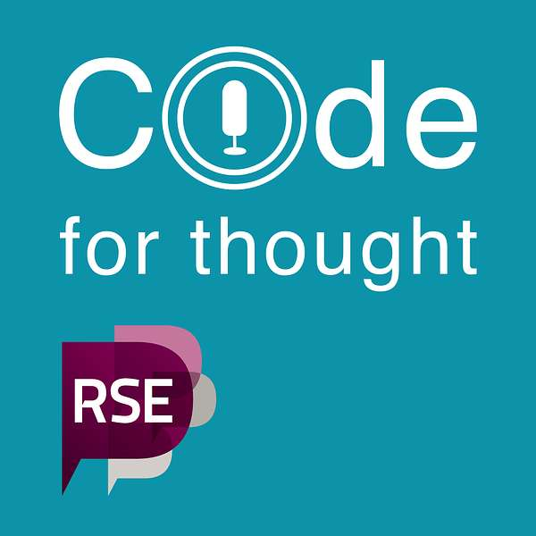
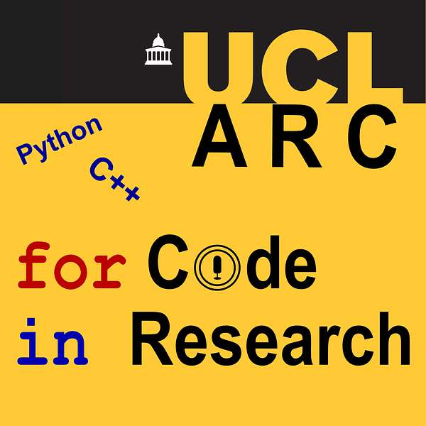
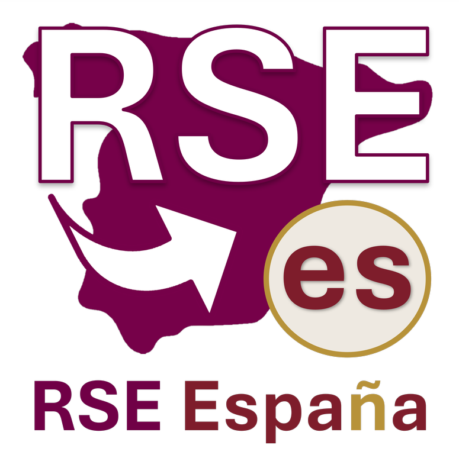
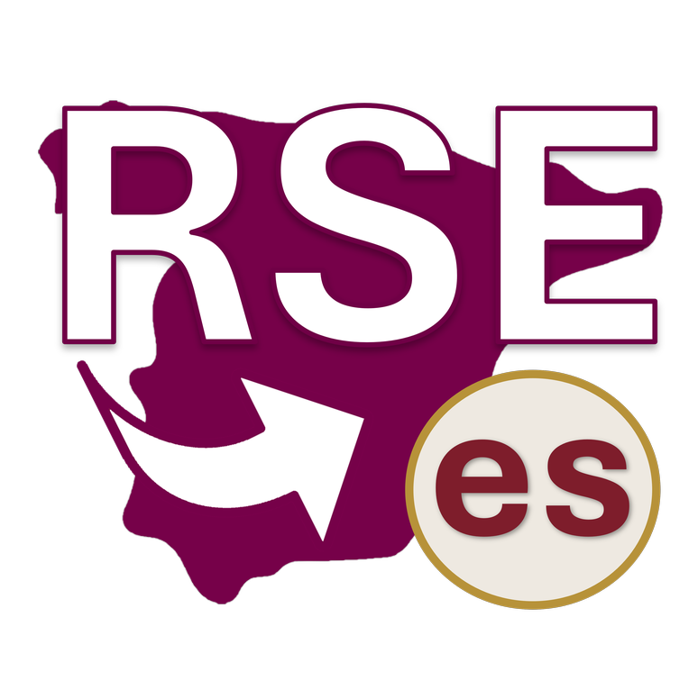

ES
ESStarting point
RSE Toolkit — New to RSE
Community-maintained guide to what an RSE is, the different types of role, and possible career pathways.
Read the guide →A space to learn what a Research Software Engineer is, find tools and best practices, and meet other RSE professionals — with a special focus on Spanish-language resources.
Resources for people discovering research software engineering: what an RSE is, how to build a career, and how it differs from other technical roles.
Community-maintained guide to what an RSE is, the different types of role, and possible career pathways.
Read the guide →Open handbook on reproducible research: version control, testing, documentation, project design and open software.
See the pathway →Spanish-language episode with Sofía Miñano and Carlos Gavidia-Calderón on the RSE profession, career paths, and the community's challenges in Latin America.
Listen to the episode →A space to discover conversations and interviews about RSE.
Podcast about research software and the people who build it. Episodes in English, German and French, plus content in Spanish.

Listen to the podcast →Companion podcast for UCL's programming-for-research courses (Python, C++). Useful for anyone starting out coding in science.

Listen to the podcast →Practical resources for working better in research: Git, testing, documentation, reproducibility and good development practices.
Courses and lessons for learning Python, R, Shell, Git and data management. Great for researchers starting to code.
Explore The Carpentries →Spanish translations of key lessons: the Unix shell, version control with Git, and R for reproducible scientific analysis.
See the lessons →Free training for scientific computing: Git, testing, documentation, collaboration and HPC. Great for PhD students and new RSEs.
See the materials →Resources for connecting with the RSE community and growing professionally.
Monthly Spanish-language RSE talks, organised by Sofía Miñano and Carlos Gavidia-Calderón since RSECon24.
See the talks →UK association with resources on careers, regional RSE groups, events and advocacy for the profession.
Visit society-rse.org →Official RSE España materials: the introductory flyer and the logo in different formats, ready to share, print, or use in your own materials.
Print-ready flyer (in Spanish): what an RSE is and how to get involved in the community.
Download the flyer →RSE España logo with text, on a transparent background.

Download the logo →Compact version of the logo, without text, on a transparent background.

Download the icon →This section grows with the community. If you know a Spanish-language resource, a talk, a podcast or a guide that would help other RSEs, let us know.
Suggest a resource{kind=link}
{kind=link}